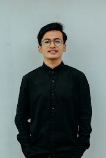

Merdeka, Tapi Tanda Tanya
Tanggal 17 Agustus 1945 adalah hari penting bagi Indonesia. Pada hari itu, bangsa Indonesia menyatakan kemerdekaannya dari penjajahan dengan pembacaan Teks Proklamasi oleh Ir. Soekarno di Jakarta. Upacara berlangsung sangat sederhana dan singkat, hanya sekitar satu jam.
Kemerdekaan Indonesia bukanlah hasil pemberian negara lain, melainkan hasil dari pengorbanan besar para pahlawan dan rakyat. Mereka berjuang dengan jiwa dan raga untuk menghapus penjajahan dari negeri ini. Menurut Kamus Besar Bahasa Indonesia, merdeka berarti bebas dari perhambaan, penjajahan, dan tidak terikat serta tidak bergantung pada pihak tertentu.
Kemerdekaan memberikan bangsa Indonesia kebebasan dari penindasan dan penguasaan bangsa asing, serta kebebasan menentukan nasib sendiri. Hal ini sesuai dengan Pembukaan UUD 1945 Alinea ke-2 yang menyatakan bahwa bangsa Indonesia berdaulat menuju masyarakat yang merdeka, bersatu, berdaulat, adil, dan makmur.
Namun, kemerdekaan yang telah diraih bukanlah akhir dari perjuangan. Rakyat harus terus berjuang untuk mencapai kemakmuran. Saat ini, Indonesia merayakan hari kemerdekaan yang ke-77. Setiap tahun, rakyat berharap keadilan dan kesejahteraan bagi seluruh rakyat Indonesia.
Namun, setelah 77 tahun merdeka, banyak rakyat kecil masih belum merasakan kesejahteraan dan keadilan. Apakah benar kita sudah merdeka? Apakah merdeka hanya berarti bebas dari penjajahan bangsa asing?
Kita perlu merenungkan, apakah hari-hari yang kita lalui semakin menambah tetesan air mata di bumi pertiwi? Kebijakan ekonomi yang masih merujuk pada kapitalisme, hukum yang masih didominasi oleh hukum kolonial, kemiskinan, kebodohan, dan rasa tidak aman masih menjadi masalah. Kebijakan yang dibuat oleh para petinggi negara masih tumpul ke atas dan tajam ke bawah, pelecehan seksual terjadi di mana-mana, demokrasi terkekang, kesejahteraan belum nampak, dan keadilan belum ditemukan.
Hubungan antara rakyat dan penguasa seringkali seperti musuh di negeri sendiri. Tanah rakyat digusur atas nama pembangunan, pedagang kaki lima digusur dengan alasan penertiban, dan rakyat kecil tidak aman dengan banyak peraturan yang justru menyengsarakan mereka. Aktivis yang menyerukan kebenaran bisa diculik atau dibunuh kapanpun. Menyuarakan kebenaran dituduh sebagai radikalisme.
Dengan umur kemerdekaan yang matang (77 tahun), seharusnya bangsa ini telah meraih banyak impian. Sayangnya, Indonesia belum merdeka dari penjajahan pemikiran, politik, ekonomi, pendidikan, hukum, budaya, dan sosial.
Kunci untuk bangkit dari penjajahan non-fisik adalah bersatu untuk mewujudkan kemerdekaan yang hakiki di bumi pertiwi. Peran rakyat kecil, mahasiswa, pemuda, dan seluruh elemen masyarakat sangat penting untuk melanjutkan perjuangan leluhur yang telah mengusir penjajah fisik, bukan melanjutkan estafet penjajahan.
Selamat merayakan Hari Kemerdekaan Republik Indonesia yang ke-77.
Penulis: Okta Alamsyah